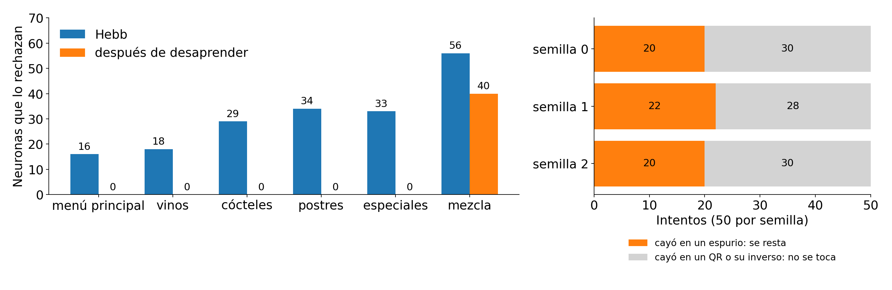
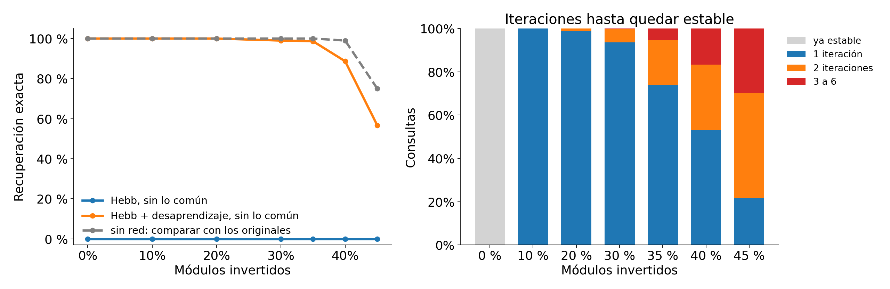
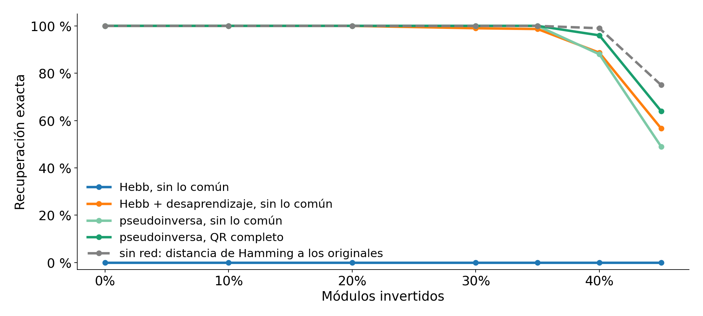
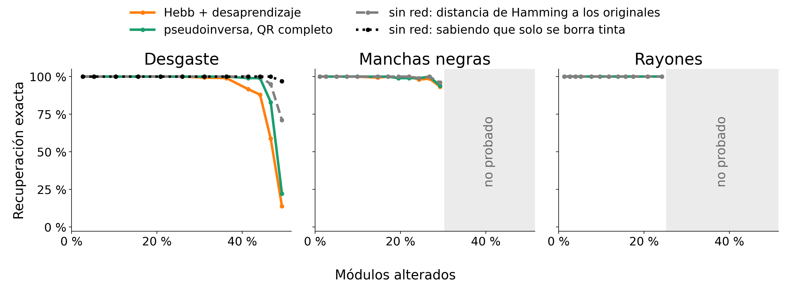
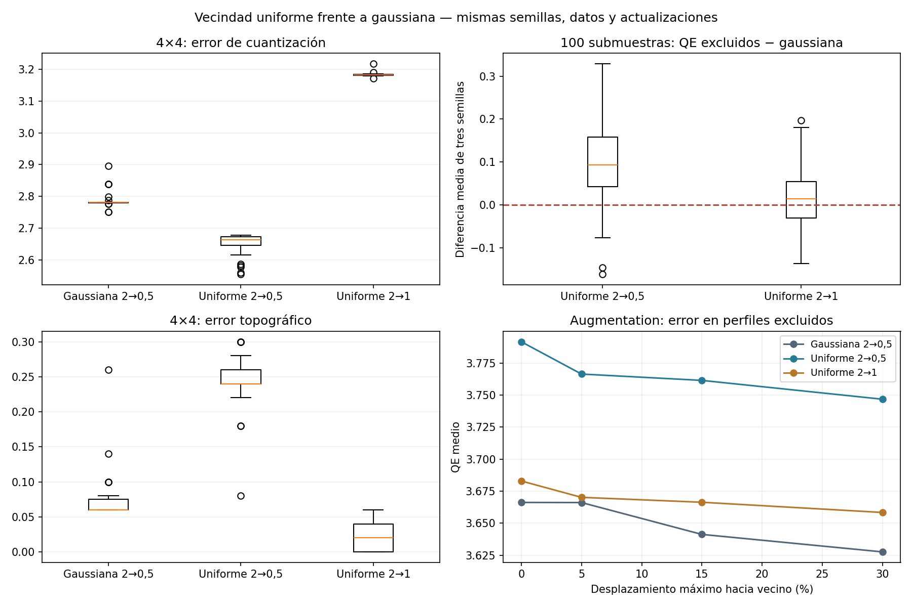
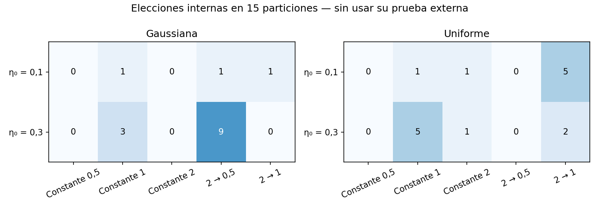

Con más de 25 % compartido, los otros QR le ganan al propio
Campo = señal propia (1) + crosstalk de los otros. En el peor módulo queda 1 − 4 × compartido. Con 70 %, Hebb deja inestables de 71 a 225 neuronas por QR.
Sacar lo común: entran de a tres, pero los cinco juntos siguen en cero
La red guarda solo los 414 módulos que difieren; los 955 iguales se reponen al final, porque son iguales en los cinco y no dicen cuál es. Con los cinco: 0 estables.
Problema 2: sin lo común, food y wine siguen pareciéndose
Problema 1 · Problema 2 · Soluciones · Límites
Sacar lo común separa a casi todos los pares, menos a food y wine
Sin lo común, food y wine quedan en 0,54; los demás pares, entre −0,40 y 0,23. Con tres QR y 25 % de ruido: 100 % sin el par, 86 % con el par.
Las dos URL miden 85 caracteres: todo lo demás cae en los mismos bits
Difieren en 6 módulos de datos y 90 de corrección de errores: 96 de 414
m = 1 − 2 · 96/414 = 0,54. El par que sigue difiere en 47 bits de datos
Diagnóstico, no solución
Separado el par, cada red funciona; elegir la red no
Food en una red y wine en otra: cada una recupera sus QR. Pero una consulta de food, en la red de wine, cae en wine (140 de 140). Para elegir hay que comparar con los originales.
Soluciones: una sola red que guarde los cinco
Problema 1 · Problema 2 · Soluciones · Límites
Desaprender es Hebb al revés, solo para lo falso
Hebb
Desaprendizaje
Regla
W = (1/N) Σ ξ ξᵀ ξ es cada QR; suma los 5, una vez
W ← W − (η/N) a aᵀ resta un estado falso a, de a uno
Qué busca
Que cada QR sea un pozo de energía
Rellenar los pozos que nadie guardó
Energía
Baja donde el estado se parece a los QR. La mezcla se parece a los cinco y queda más abajo
La de a sube η(N−1)/2. La de cada QR sube según cuánto se parezca a a
Hebb no puede evitar la mezcla: nunca la guardó, aparece sola. Desaprender la busca y la resta. Funciona si los QR no se parecen a lo que se resta: por eso, sin lo común.
Desaprendizaje: rellenar los pozos falsos
1
Partir de un estado al azar
±1 en cada una de las 414 neuronas (sin lo común)
2
Dejar que la red converja
con la misma dinámica sincrónica
3
Si cae en un QR o en su inverso, no se toca
tampoco si termina en un ciclo o en el tope
4
Si cae en otro estado estable a: W ← W − (η/N) a aᵀ
con η = 0,1 y la diagonal en cero
50 intentos, η = 0,1 y tres semillas de entrenamiento: elegidos en una exploración y confirmados después con consultas nuevas.
Después de desaprender, los cinco QR son estables

Se restaron 20 a 22 estados falsos. Los QR pasan de 16–34 neuronas en contra a 0: quedan estables. El pozo falso de Hebb pasa de 0 a 59: deja de ser un pozo.
Desaprendizaje: 99 % hasta 35 % de ruido, casi siempre en 1 o 2 iteraciones

Con 40 % de ruido baja a 89 %; con 45 %, a 57 %. Media de 10 a 45 %: 90,5 %. La energía no subió en ninguna de las 2.100 consultas.
La pseudoinversa es Hebb sin el eco del parecido
Hebb
Pseudoinversa
Regla
W = Ξᵀ Ξ / N los 5 QR, todos con el mismo peso
W = Ξᵀ G⁻¹ Ξ los 5 QR, con pesos que descuentan el parecido
Qué garantiza
Que al darle un QR lo devuelva igual, solo si los QR son casi distintos
Que al darle un QR lo devuelva igual, aunque se parezcan
Al mostrar food
Votan todos según su parecido con food: wine 0,86, specials 0,77
Vota solo food: el parecido de los otros con food ya lo explica food
Ξ (xi mayúscula): los 5 QR como filas, 5 × 1.369 valores de ±1. Ξᵀ es la misma tabla girada.
Hebb confunde parecido con presencia: wine se parece a food, entonces vota. G⁻¹ descuenta ese eco y solo vota el QR que está.
Pseudoinversa: medir el parecido y descontarlo
1
Medir el parecido entre cada par de QR: G = Ξ Ξᵀ
Ξ: los 5 QR como filas. G es 5 × 5: módulos iguales menos distintos; food y wine: 1.273 − 96 = 1.177
2
Invertirla: G⁻¹
dice cuánto del parecido con cada QR ya lo explican los otros. Es 5 × 5: un solo cálculo
3
Guardar como Hebb, con esos pesos: W = Ξᵀ G⁻¹ Ξ
Hebb usa 1/N para todos; acá cada QR lleva su peso y se descuenta lo que comparte
4
Diagonal en cero, igual que en Hebb
la neurona no se vota a sí misma
Se calcula una sola vez: sin iterar, sin elegir parámetros y sin sacar lo común. Hay un ejemplo con 6 neuronas en el apéndice.
Las redes quedan cerca del mejor caso posible

Gris: distancia de Hamming, cuántos módulos de la consulta difieren de cada original; gana el de menor distancia. Con ruido al azar nada la supera. Media de 10 a 45 %: Hamming 95,7 %, pseudoinversa 93,3 %, desaprendizaje 90,5 %.
Con daño realista, las redes recuperan casi todo

Desaprendizaje: 97 % o más hasta un cuarto de módulos alterados, en todos los tipos. Con desgaste, Hamming deja de ser el techo: sabiendo que solo se borra tinta se acierta 97 % con 49 % alterado, contra 71 %.
Conclusiones
Hebb no falla por la red sino por los QR: se parecen tanto que la mezcla le gana a cada uno
Desaprender o la pseudoinversa guardan los cinco: recuperan el 99 % o más hasta con 35 % de ruido
Comparar con los originales por distancia de Hamming da los mejores resultados
Qué le recomendaríamos a la Trattoria
Guardar los cinco QR originales y comparar por distancia de Hamming: es lo más simple y lo que más recupera
Si quiere una memoria que los recupere sola: pseudoinversa con el QR completo
Para los próximos menús: QR que se parezcan menos, por ejemplo con otra máscara en cada uno
+
Apéndice
Gráficos de respaldo para preguntas.
Escalas originales y estandarizadas
Biplot PC1–PC2 con todos los creadores
PC3: publicidad y fútbol
Correlaciones por bloques, con valores
Barrido de geometría del mapa
Barrido de tasa de aprendizaje y radio
Vecindad uniforme con las mismas semillas y datos

Qué radio eligió cada vecindad al calibrar

Representaciones de entrada para Kohonen
Planos de componentes del mapa
Qué variables separan las regiones
Regiones en PC1–PC3
Kohonen sobre componentes principales
Candidatos de cada cliente
Elegidos frente al top 3 por seguidores
Regiones y elegidos en el mapa
Cómo funciona la red
Cada módulo es una neurona. Un QR de 37×37 son 1.369 neuronas: negro = +1, blanco = −1.
Guardar, con Hebb:W = (1/N) Σ ξξᵀ, con la diagonal en cero. Cada QR guardado refuerza las conexiones que lo sostienen.
Recuperar:s ← sign(W s), todas las neuronas a la vez. Si el campo de una neurona da cero, no cambia.
Energía:H = −½ Σ wᵢⱼ sᵢ sⱼ. Los QR guardados deberían ser sus pozos.
Para cuando el estado no cambia, cuando repite uno anterior (ciclo) o a las 100 iteraciones.
Medimos dos cosas: si la salida es exactamente el QR guardado y si un lector de QR la puede leer.
Pseudoinversa: descontar el parecido antes de guardar
Hebb:W = Ξᵀ Ξ / N. Suma cada QR: lo que comparten se suma cinco veces y tapa lo que los distingue.
Pseudoinversa:W = Ξᵀ (Ξ Ξᵀ)⁻¹ Ξ, con la diagonal en cero. Ξ tiene los cinco QR como filas.
Ξ Ξᵀ es la tabla 5 × 5 de solapamientos (por N). Su inversa descuenta cuánto se parece cada QR a los otros.
Resultado:W proyecta sobre lo que se arma combinando los QR. Un QR guardado ya está ahí: su campo es (1 − Pᵢᵢ) ξᵢ, del mismo signo. Queda estable.
Con QR ortogonales da lo mismo que Hebb. Sirve mientras ningún QR sea combinación de los otros. No está en el apunte.
Pseudoinversa en chico: 6 neuronas, 3 recuerdos
A = (+ + + + − −) B = (+ + + − + −) C = (+ + − + + −)
Presento A. En la neurona 5, A pide −; B y C piden +. ¿Cuánto empuja cada uno?
A B C campo
1. Parecido con A 5 3 3 (sin contar la 5.ª)
2. Hebb: parecido / 6 −0,83 +0,50 +0,50 +0,17 se da vuelta
3. Pseudoinversa −0,70 +0,20 +0,20 −0,30 queda
G⁻¹: 0,20 propio, −0,05 por cada otro recuerdo
A: 0,20·5 − 0,05·(3+3) = 0,70 B: 0,20·3 − 0,05·(5+3) = 0,20
Con Hebb, B y C juntos empujan más que A. La pseudoinversa les descuenta lo que comparten con A: bajan de 0,50 a 0,20 y gana A.
Un QR con ruido, paso a paso
Hebb: iteraciones hasta converger
Solapamientos entre los QR
Crosstalk: dónde el campo le gana a cada QR
En rojo, las neuronas donde el crosstalk de los otros QR da vuelta el signo. Con cinco patrones al azar: ninguna.
Capacidad medida: patrones al azar contra QR
Sin compartidos: ruido, con la reposición sin red como referencia
Sin compartidos: todas las ternas
Una red por zona: QR estables en cada zona
Cada número es cuántos de los cinco QR quedan estables en esa zona (en gris claro, zonas iguales en los cinco). A lo sumo dos zonas guardan los cinco.
Una red por zona: barrido de ruido y lector
Dos redes (diagnóstico): cuántas redes y cómo repartir
Dos redes (diagnóstico): qué devuelve cada una
Una esquina rota cae casi toda donde los QR son iguales
121
módulos en una esquina de 11×11
65
cambian: los negros que quedan blancos
9
caen donde los QR difieren: solo esos los arregla la red
Los otros 56 caen en módulos iguales en los cinco QR, que se reponen sin la red. Con desaprendizaje vuelve exacto el 100 % hasta una esquina de 21×21 (32 % del QR).